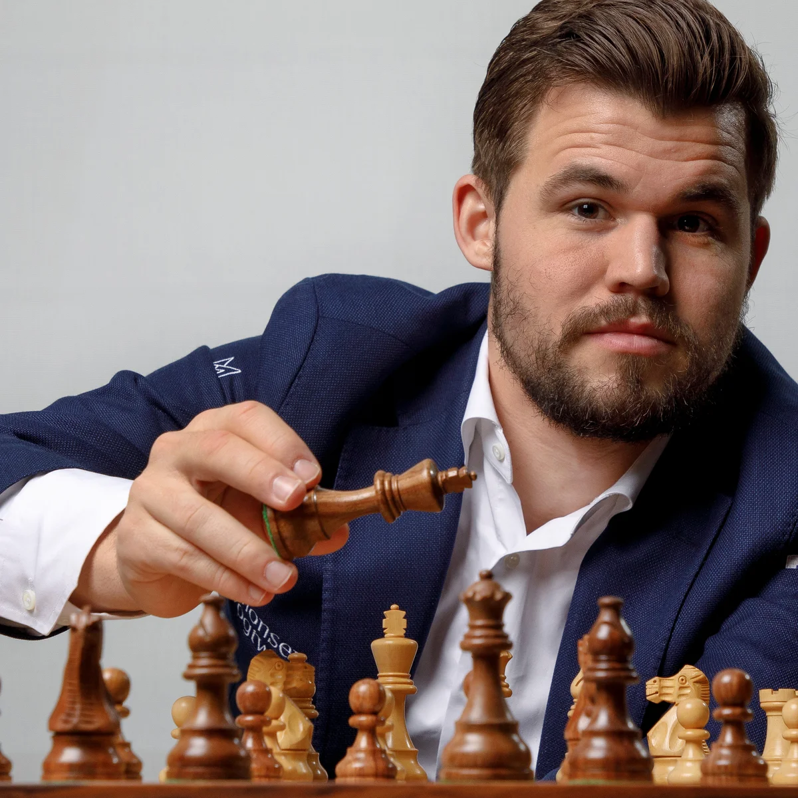
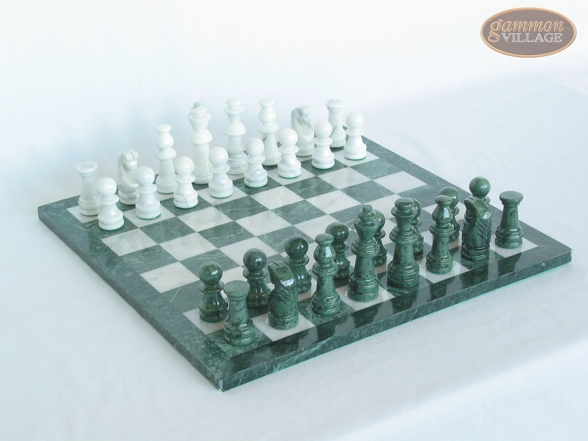

My favorite player (Magnus Carlsen)
My favorite opening (The Meran)
Chess
Out of all the hobbies I have on here, I have definitely spent the
least amount of time on Chess. It is still something I care about deeply
however.
